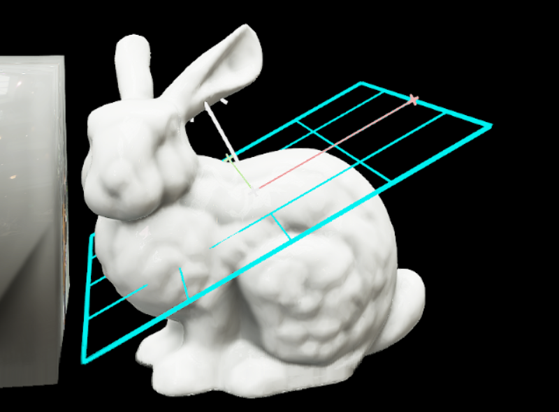
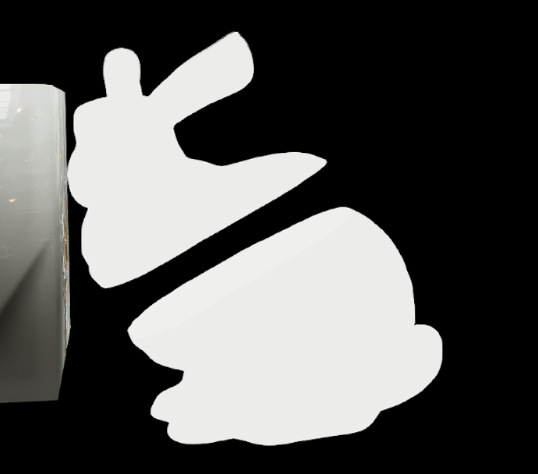
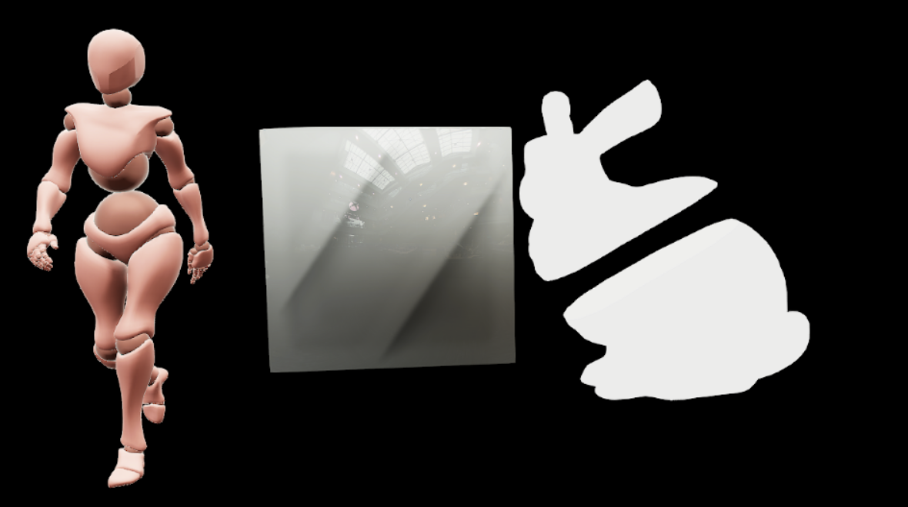

ModelInstance 하나의 메시 하나 (버니) m_GeometryCPU 정점·인덱스 + ModelInstance의 노드 world 변환
➜
②
복사 → ProceduralMesh
복사본 1개
CopyProceduralMeshFromStaticMesh 정점을 world로 옮기고 용접 → 자를 수 있는 메시
➜
③
평면으로 자르기

SliceProceduralMesh 분류 → 걸친 면 분할 → 채울 수 있는 단면에 cap
➜
④
ProceduralMesh 2개

ProceduralMesh · + 쪽 (법선 쪽)
ProceduralMesh · − 쪽 (반대쪽)
⬇

⑤
원본 대체
절단이 성공하고 단면이 평면 사각형 안에 있을 때만 확정한다. 실패하면 원본을 그대로 둔다. 확정하면 원본 버니는 숨기고 (SetMeshVisibility), 두 ProceduralMesh를 원본 자리에서 평면 법선 방향으로 조금 벌려 그린다. 다른 모델(큐브, 캐릭터)은 그대로 남는다.